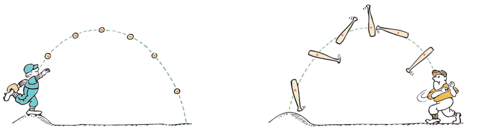
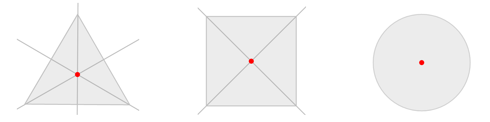
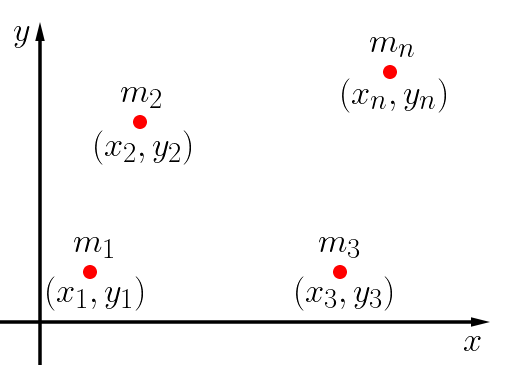
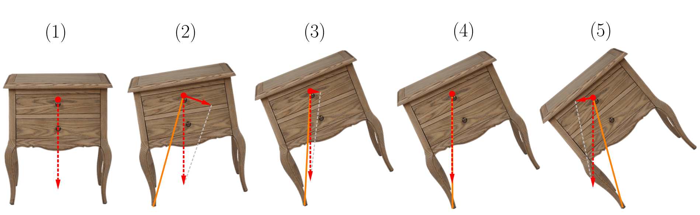
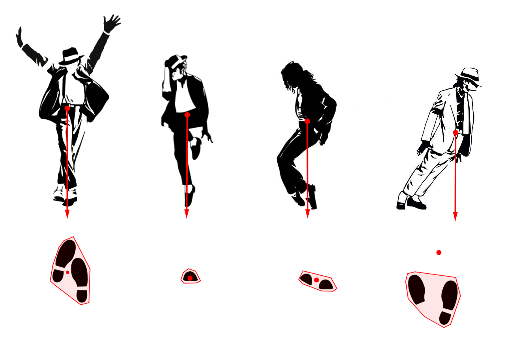
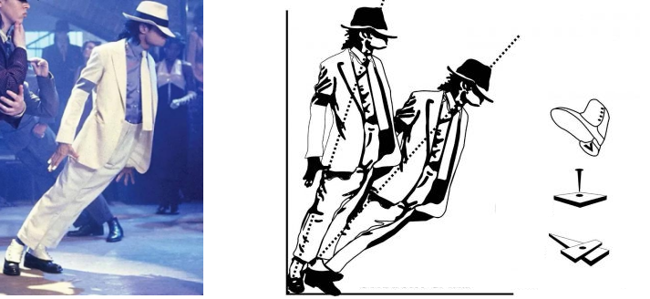

Aula4-31: Centro de massa e centro de gravidade
Centro de massa
Centro de massa é um ponto imaginário que tomamos como sendo o lugar de concentração de toda a massa de um corpo. É, portanto, um ponto ficcional útil para fim de análise de problemas.
Ao lançarmos ao ar uma bola de baseball, identificaremos que ela perfazerá trajetória parabólica. Se repetirmos o processo com um taco de baseball, perceberemos existir neste taco um ponto que também percorrerá trajetória parabólica. Pois bem, tal ponto do taco de basebool é o ponto do centro de massa. Com efeito, isto ocorrerá não apenas com o taco, mas com qualquer outro corpo material. Este é um método experimental de se identificar o centro de massa.

➔ O centro de massa de um corpo de distribuição de massa homogênea e simétrico é o ponto médio (também chamado baricentro).

➔ O centro de massas de um sistema com mais de um corpo é dado, num sistema de coordenadas, pelo cálculo da média das posições do centro de massa de cada um dos corpos ponderadas pelas massas dos corpos. Observe o esquema abaixo:

Centro de gravidade
Centro de gravidade é um ponto imaginário que tomamos como sendo o lugar de concentração de todo o peso de um corpo. É, portanto, um ponto ficcional útil para fins de resolução de problemas. Em situações corriqueiras, o centro de gravidade coincide com o centro de massa (isso ocorre porque na maioria dos problemas estudados o campo gravitacional é uniforme e, sempre que isso ocorrer, eles coabitarão o mesmo ponto).
A estabilidade dos corpos
Conhecer o centro de massa ou gravidade de um corpo é essencial para que possamos identificar o seu estado de estabilidade.
Veja a ilustração abaixo. Nela, um objeto é submetido a diferentes condições iniciais. A força peso está representada em vermelho; o seguimento de reta laranja representa o braço de alavanca que liga a força peso ao ponto de rotação do sistema.

◦ Em (1), o corpo está em estado de equilíbrio estável.
◦ Em (2), ele foi perturbado, de modo que sua condição inicial implica uma tendência de rotação no sentido horário.
◦ Em (3), a situação é analoga à situação em (2).
◦ Em (4), temos o corpo em equilíbrio instável, podendo, sob qualquer ínfima pertubação, rotacionar em sentido horário ou sentido anti horário.
◦ Em (5), temos um torque resultante que fará o corpo tombar, girando, portanto, em sentido anti horário.
Michael Jackson desafiando a gravidade?
Michael Joackson, ao interpretar sua música Smooth ciminal, usualmente executava um movimento em que pendia seu corpo obliquo em relação ao solo em aproximadamente 45°. Mas tal movimento é fisicamente possível?
Para respondermos a esta questão, analisaremos a imagem abaixo.

Perceba que o movimento em discussão não oferece estabilidade ao interprete, de modo que ele não conseguiria manter-se em tal posição sem o auxílio de dispositivos externos.
E, de fato, para cumprir tal propósito, Michael Jackson valia-se de um sistema de sustentação com cabos que fixavam as solas de seus sapatos no solo.
